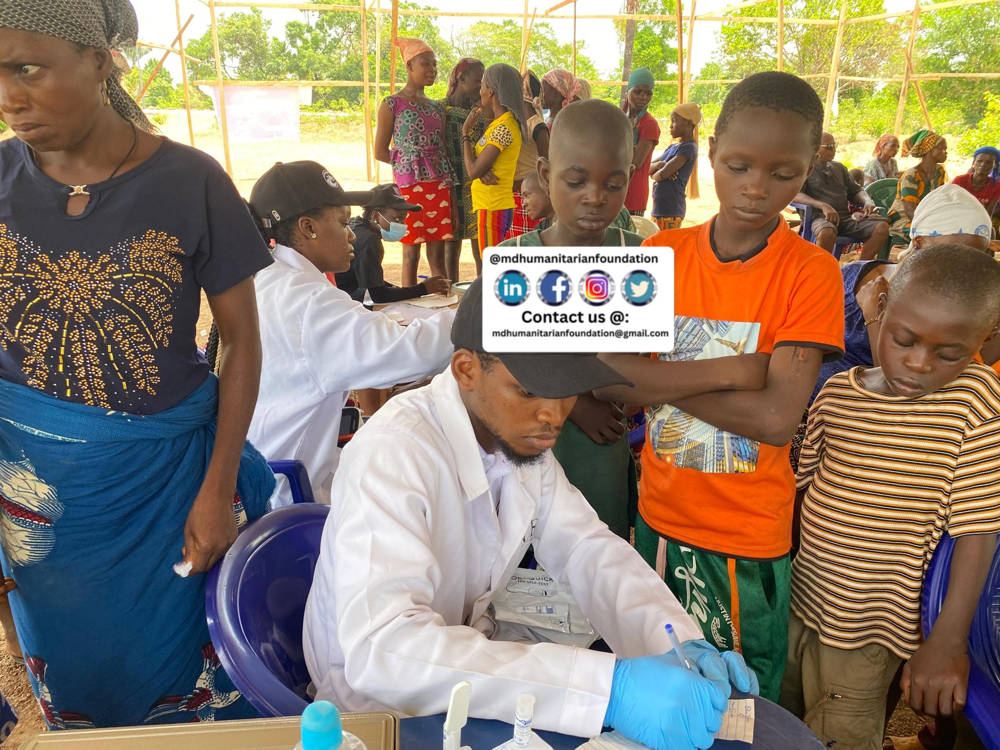
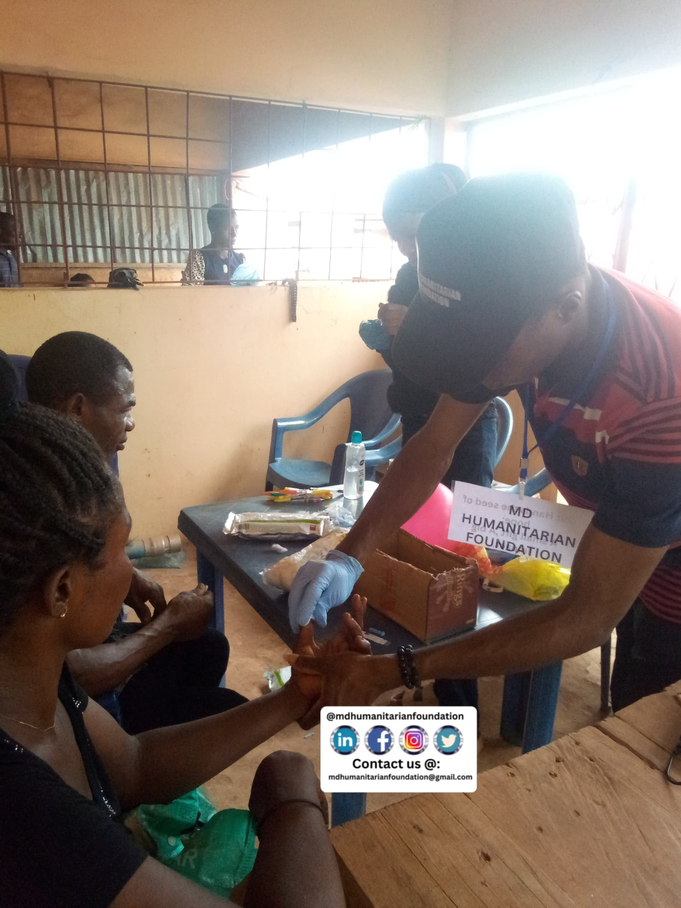
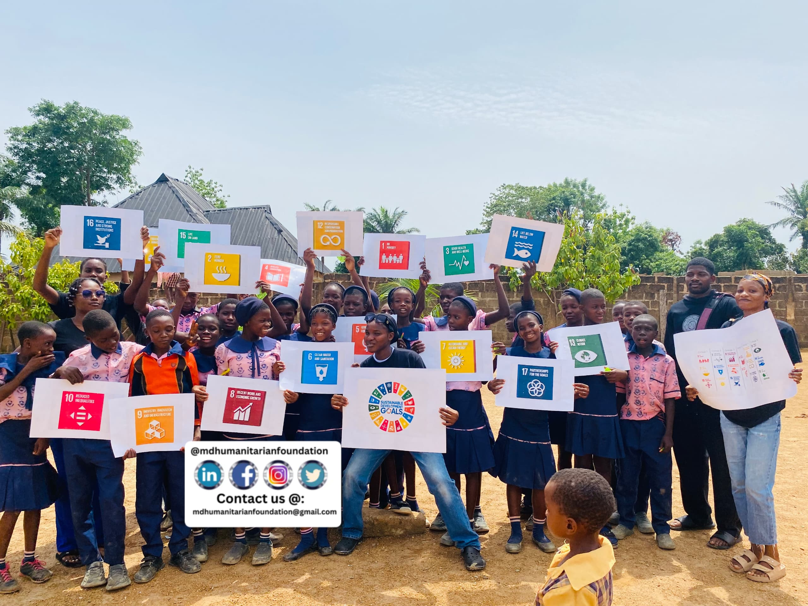

Our Projects

MD Humanitarian Foundation successfully conducted a free medical outreach that provided vital healthcare services to hundreds of underserved community members in Oferekpe in Izzi, Ebonyi state. The outreach had a profound impact, bridging the healthcare gap and improving the overall well-being of the beneficiaries. The event was a resounding success, earning widespread appreciation from the community and reinforcing the foundation's commitment to providing accessible healthcare to marginalized populations.
 >
>
The Christmas Special event brought immense joy to motherless babies and orphans, as generous donations from kind-hearted individuals enabled the purchase of essential items and heartfelt gifts. The outpouring of love and support had a profound impact on the young beneficiaries, reminding them that they are seen, loved, and valued. As the children's faces lit up with smiles, it was clear that the Christmas Special had not only met their physical needs but also warmed their hearts and filled their spirits.
>MD Humanitarian Foundation's free medical outreach and clothing donation event brought smiles to numerous children, providing them with essential healthcare services and brand-new clothes. The themed "Gift for Every Child" initiative ensured each youngster received a specially selected present, making the experience even more unforgettable. This heartfelt endeavor had a profound impact, fostering a sense of hope, joy, and dignity among the children and their families.
>MD Humanitarian Foundation marked its one-year anniversary on September 15th 2024, celebrating a year of transformative impact through its philanthropic efforts. The foundation's free medical outreach programs and awareness campaigns on Monkeypox and HIV/AIDS have been particularly impactful, empowering communities with vital health knowledge and bridging the gap in access to quality healthcare. By addressing pressing health concerns and promoting education, MD Humanitarian Foundation has improved the lives of countless individuals, fostering a healthier and more informed society.
>MD Humanitarian Foundation reached out to Excellent Name Academy in Amike-aba community of Ebonyi state, empowering students with vital knowledge on the Sustainable development goals. In collaboration with the United Nations SDG Network, the foundation also educated the students on the Sustainable Development Goals, highlighting the critical connection between health, education, and overall well-being. By instilling these values, MD Humanitarian Foundation inspired a new generation of leaders to prioritize sustainable development and create positive change in their communities.